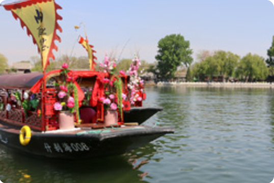
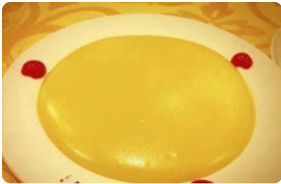
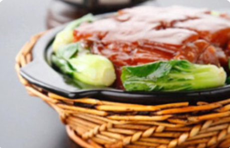
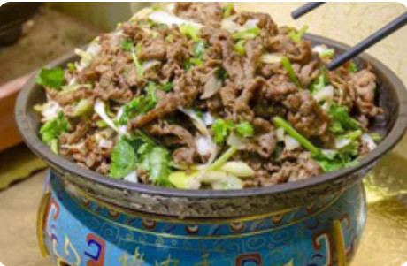

One day tour of Shichahai Yanbaoxie Street
Shichahai Park
Visit the Shichahai area in the morning. It integrates natural landscape and humanistic architecture, and retains the traditional landscape and residential reserve area with the most characteristics of old Beijing. Today's Shichahai is compatible with the classical and the modern, the tradition and the avant-garde fit together, and the natural landscape and cultural relics shine.
Address:
23 Yangfang Hutong, Xicheng District, Beijing
Highlights:
Since the Qing Dynasty, it has been a place for leisure and summer relaxation. The three seas are rippling with blue waves, and the shore is filled with weeping willows. The distant mountains are as beautiful as Dai, and the scenery is magnificent, making it one of the scenic spots in Yanjing.
-

- 
Yandaixie Street
In the afternoon, we arrived at Yanbagxie Street. This "Yanbagxie" is the oldest commercial street in Beijing. It was originally a place for selling smoking utensils and mounting calligraphy and painting. Now, the alleys with green bricks and gray tiles are filled with small shops that combine Chinese and Western styles. Walking and strolling, you can feel its charm. Then I took the car back to my warm home and ended my happy day!
Address:
In front of Gulou, Di'anmenwai Street, Beijing
Highlights:
The streets in Beijing are large and square, while the shape of the Yanbagxie Street is like a cigarette bag. The slender streets are like cigarette poles, the east entrance is like a cigarette holder, and the west entrance bends south, looking like a cigarette pot.
-  Three Non Stick
-  Braised Pork Belly
-  Baylor's Roasted Meat
 330445074@qq.com
330445074@qq.com